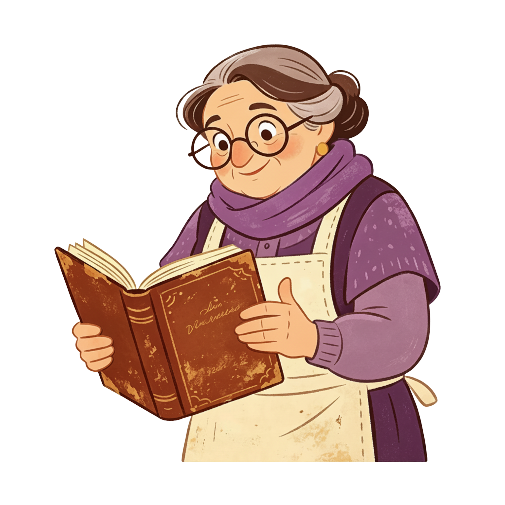
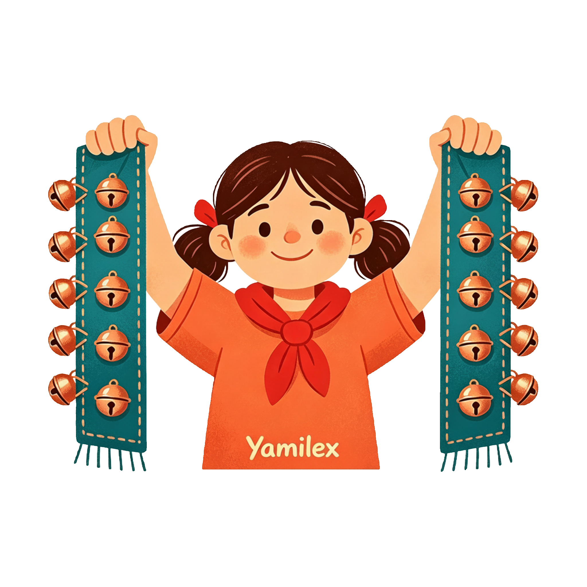

Doña Mercedes abre su libreta vieja: agrupar, contar a saltos y sumar los sueltos. Hoy el método queda por escrito — en la pantalla y en tu Libreta del Taller.
Doña Mercedes saca una libreta gastada: «Este método no es mío, es de mi mamá. Aquí está todo contado por grupos desde hace treinta años». Y hay más noticias: Los Relámpagos sumaron dos capas al pedido.

Toma tu Libreta del Taller impresa y escribe tu nombre en «Sustentante/s». La vas a usar durante toda la misión.
Mira el conteo de doña Mercedes, compás por compás.
Hay 23 cascabeles. Toca una cinta para coser el siguiente. Deja las dos llenas por igual.
En el montón: 23
La regla quedó con tres huecos. Toca una palabra y luego su hueco.
Agrupa en grupos Cuenta los grupos completos. Suma los sueltos
La ferretería mandó una funda con una etiqueta: «3 cintas de 10 y 5 sueltos».
Compruébalo con la regla: toca las cintas primero y luego los sueltos.
Wilkin contó la mesa así: «10, 20, 30… ¡y 40!». Doña Mercedes levanta una ceja.
Toca el número donde se equivocó.
Los mismos 30 cascabeles, dos caminos. Avanza los dos conteos a la vez y compara.
Yamilex terminó la mesa: 4 cintas de 10 y 7 sueltos. Escribe el total.

Faltan cascabeles: hay que encargar 6 cintas de 10 y 4 sueltos. Escribe el pedido con las tres partes del taller.
Cuenta como el taller: toca las cintas a saltos y luego los sueltos de uno en uno.
La regla quedó escrita en la pantalla, en tu Libreta y en el pedido que firmaste. Mañana llega el día grande: la entrega de los trajes.